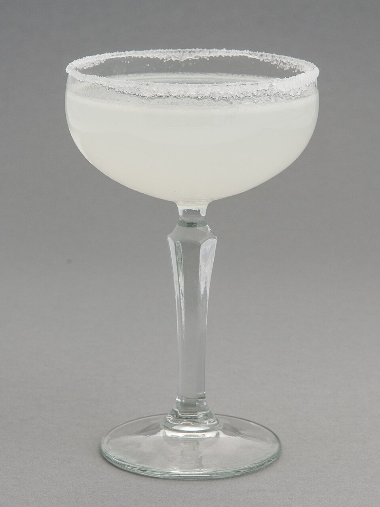

Hours of Operation
- Sunday: 12:00 PM – 9:00 PM
- Monday – Thursday: 11:00 AM – 9:00 PM
- Friday – Saturday: 11:00 AM – 9:30 PM
- Kitchen & Bar: Full service until close
Plan your gathering at RuRu’s Tacos + Tequila. Located at 715 Providence Road in the historic Myers Park neighborhood, we welcome guests seven days a week with convenient on-site parking, walk-in courtyard seating, and fast curbside pickup.

We do not accept reservations—seating is entirely first come, first served. During peak hours, our indoor agave bar and courtyard cocktail lounge offer the perfect setting to enjoy a fresh margarita while your table is prepared.
RuRu’s Tacos + Tequila:
715 Providence Rd
Charlotte, NC 28207
Phone: (704) 946-8161
Convenient to Myers Park, Eastover, and Dilworth.
Arriving at 715 Providence Road is straightforward:


Bring the electric RuRu's cantina experience to your home, office, or private celebration: